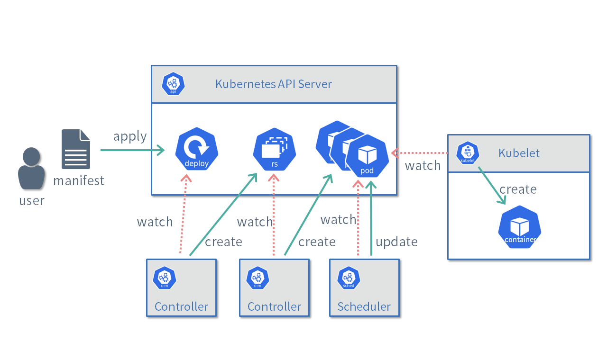
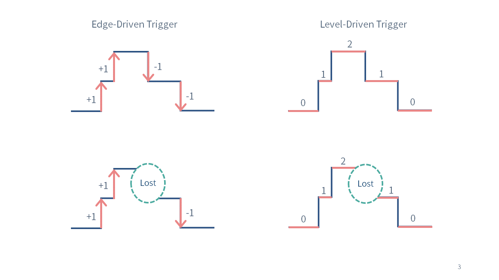

自定义开发控制器的基础知识
本节介绍了开发自定义控制器所需的Kubernetes的基本知识。
申明式（Declarative）
Kubernetes中最重要的概念是声明性的API。
例如，如果要在kubernetes上部署nginx，我们只需要通过如下YAML格式中描述的清单并创建部署资源。
apiVersion: apps/v1
kind: Deployment
metadata:
name: nginx-deployment
spec:
selector:
matchLabels:
app.kubernetes.io/name: nginx
replicas: 3
template:
metadata:
labels:
app.kubernetes.io/name: nginx
spec:
containers:
- name: nginx
image: nginx:latest
在Kubernetes中，有管理各种资源的控制器。
比如Deployment资源在kube-apiserver上注册时，管理Deployment的控制器会创建一个新的ReplicaSet资源。
接下来，当注册ReplicaSet资源时，管理ReplicaSet的控制器会创建在spec.replicas中指定的三个新 Pod。
此外，当Pod资源在kube-apiserver上注册时，一个名为kube-scheduler的程序会确定Pod将被放置的节点并更新Pod信息。
每个节点上运行的名为kubelet的程序在找到具有其节点名称的Pod资源时会启动一个容器。

例如我们可以通过Deployment资源的Spec.Replicas'字段来控制pod数量，可以增加或者减少spec.replicas`来减少或增加pod。
这样，在Kubernetes中，多个程序根据用户声明的清单协同工作，并调整系统使其处于所需的状态（在本例中，三个Nginx实例正在运行）。
通过使用声明式而非命令式（Imperative）机制，运行在 Kubernetes 上的应用程序可以实现高可用性和可扩展性。 然而，控制器的实现可能非常困难，因为它必须考虑各种情况。
CRD(Custom Resource Definition)和CR(Custom Resource)
Kubernetes附带许多标准资源，比如Deployments和Pod。
虽然在某种程度上使用标准资源构建系统是可能的，例如，如果你想在Kubernetes上自动化证书颁发或MySQL集群管理，你将需要自定义开发控制器。
因此，提供了自定义资源（CR）作为Kubernetes用户自由使用新资源的机制
为了使用自定义资源，您需要准备 CRD（自定义资源定义）作为其定义。CRD允许您以OpenAPI v3.0格式编写验证，如下所示
自定义控制器
在 Kubernetes 中，检查资源状态并执行某些处理的程序称为控制器。
例如，一个控制器正在基于Deployment资源创建ReplicaSet资源。
如果您查看Kubernetes源代码，您会发现有许多与标准资源相对应的控制器。
- https://github.com/kubernetes/kubernetes/tree/master/pkg/controller
相比之下，用户定义的自定义资源控制器称为自定义控制器。
下面，我们将介绍实现控制器时的重要概念。
Reconciliation Loop
Reconciliation Loop协调循环是自定义控制器的主要逻辑。
将资源中描述的状态与系统当前的状态进行比较，并进行调整以消除差异。

在前面的部署实例中，资源定义的是三个pod，协调循环（Reconciliation Loop）通过增加或者减少pod的数量来匹配理想状态来处理该协调过程。
冪等
Reconciliation Loop(协调循环)必须是幂等的。
比如我们之前的示例中pod的控制器，如果这个控制器被申明为3个pod，那么无论调用多少次的Reconcicle,pod的数量都始终保持是3。当存在3个pod，再次调用reconcile时，不应在创建三个pod或有任何报错信息。
显而易见，在kubernetes中，通过命令式基础设施自动化工具通常不是幂等的。
水平触发和边缘触发
Reconciliation Loop是指在资源被新注册或编辑时，或者目标资源的状态发生变化时，必须进行适当的处理。
例如，在前述的例子中，如果Deployment资源中描述的副本数增加，或者由于服务器故障导致 Pod 数量减少时，则需要创建新的 Pod。
在这种情况下，根据状态变化事件执行处理被称为边缘触发器，根据当前状态执行处理被称为水平触发。
-
水平触发: 定期检查各个集群内各种对象的状态，如果满足某种条件（例如pod running 状态），对应的handler就一直触发一些动作。
-
边缘触发: 当某些对象发生了状态改变（例如pod 从running到不健康状态，从没有pod到创建出一个pod），在改变的时刻对应的handler会触发一个行为。
(参考)

如图所示，如果Reconciliation Loop仅关注事件（例如Replica数量的增减），那么如果由于某些原因（例如控制器故障）导致事件丢失，期望状态和当前状态就会不一致。
另一方面，如果关注的是当前状态（例如当前的Replica数量），即使事件丢失，也能够使状态收敛到期望状态。
Kubebuilder提供的框架中，当各种事件发生时会调用Reconciliation Loop。
但是，此时Reconciliation Loop不会接收到值如何变化的信息。
必须检查当前状态，并根据该状态实现相应的处理。
通过这种机制，可以实现对事件丢失和故障具有较强容错能力的控制器。